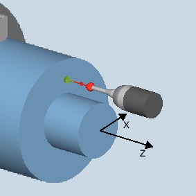

Mit dieser Messvariante können an Vorderkanten, Werkstückmaße gemessen und daraus Korrekturen abgeleitet werden.
Das Ergebnis der Messung, die Messdifferenz, kann wie folgt verwendet werden:
Korrektur einer Nullpunktverschiebung
Korrektur eines Werkzeugs
Messung ohne Korrektur
Der Messzyklus ermittelt den Istwert eines Messpunktes an einer Vorderkante des Drehteils, bezogen auf den Werkstücknullpunkt.
Es wird die Differenz zwischen dem aktuellen Istwert (Messwert) und einem vorgegebenen Sollwert in der 1. Achse der Ebene berechnet (bei G18: Z).
Eine erweiterte Werkzeugkorrektur in die Summen- und Einrichtekorrekturen ist möglich.
Bei der Werkzeugkorrektur können generell Erfahrungswerte eingerechnet werden.
Messen: Vorderkante (CYCLE974)
Der Messtaster muss in Messrichtung kalibriert und als Werkzeug aktiv sein. Der Messtastertyp ist 580.
Die Schneidenlage kann 5 bis 8 sein und muss der Messaufgabe entsprechen.
Das Werkstück ist gegebenenfalls mit SPOS in die richtige Winkelstellung der Spindel zu positionieren.
Der Messtaster muss gegenüber der zu messenden Fläche positioniert sein und wird durch Verfahren der Messachse in Richtung des Sollwertes im Messzyklus erreicht.
Nach Beendigung des Messvorgangs steht der Messtaster um den Betrag des Messweges (DFA) gegenüber der Messfläche.
Siehe auch:
Messen: Vorderkante (CYCLE974)